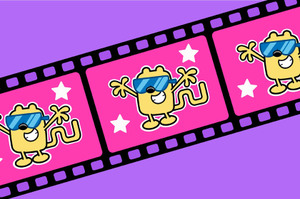

Tomorrow morning from 11-12am ET, our new production Wow! Wow! Wubbzy! simultaneously debuts on television both on Nick Jr. and Noggin (here's the press announcement) and I couldn't be prouder of any achievement in which I've been lucky enough to be included. Every show is the result of seemingly Herculean effort, and Wubbzy is no exception.
Susan Miller and I got together in March 2002 and decided then and there that her company, Mixed Media Group, and my company, Frederator Studios, would form a joint venture called Bolder Media for Boys & Girls. We would specialize in pre-schooler media (for those of you without children, that's stuff for kids under 6), starting with books, and hopefully moving onto TV and movies. Right now it's hard to imagine just how many hours, days, months, years we've spent just talking to each other willing this thing into existence, but as our first debut (there will be others), as with most everything it seems like it went by in seconds. I have had a lot of partners over the years and a lot of successes (and failures) with them, but Susan has been one of the most best and determined partners I've ever been fortunate enough to have on my side. Thanks Sue, it's been a great ride.
Here, in much more space than usual, is my personal list of the thanks to many Wubbzy colleagues. It's in alphabetical order only for ease, and I'm sure I'm missing someone; please know it was for no reason other than my own clumsiness. Thank you all.

Bob Boyle is the relentlessly talented creator of Wow! Wow! Wubbzy! When we first put out a call to our long time animation collaborators for picture book pitches, Bob showed up immediately with a pile, including what became Wow! Wow! Wubbzy! (You can find the entire story, including how his then 9 year old niece was his story inspiration, at The Wubblog at www.wubbzy.com). It was obvious he didn't just pull these out of his drawer, and as was typical of Bob, he listened closely to what we thought we might need, and worked incredibly hard to satisfy us. Since we started production Bob has worked constantly to keep the quality and integrity of his vision alive. Since we met in 1997 when Larry Huber hired Bob as a storyboard artist on Oh Yeah! Cartoons, and he went on to art direct and produce our production of The Fairly Oddparents, he has been one of the most driven of the prodigiously most talented. I'm confident that Wow! Wow! Wubbzy! will be his breakout as a creator. Thanks for everything over the years Bob, sincerely.
Karen Driscoll runs marketing at Nickelodeon and got her start at Nick Jr. She has a unique grasp on the smartest and best ways to accomplish. In addition to bringing her team into ours, she offered insight, something lacking in most enterprises.
Everyone at Fisher-Price and all our new licensees are happily determined to put Wubbzy and his friend in the hands of the kids of the world. Thanks for your early belief.
Mike Glenn, Alex Kamnitsis, Carrie Miller are my colleagues at Frederrator in New York. Their patience with me, with Susan, with all of our hair-brained schemes deserve medals. And Carrie's dedication to keeping a production blog up to date from 3000 miles away should speak to her complete commitment to animation.
Ted Green and John Hyde were the people at IDT Entertainment who believed in the long term vision of quality and success that Susan and I were pitching, even before we had our first creative project. They convinced their bosses, their colleagues, and their employees we were not the typical raving lunatic producers, and that we could actually deliver on what we were promising. And with all the promises, pitches, and producers that exist in the world, that was no small task; thank you forever guys. As Ted moved on to other ventures, John continued to support us and our abilities. Here's to a great future together.
Scott Greenberg runs the Film Roman/IDT operation for John Hyde, and I must say I've never had a more supportive and enthusiastic collaborator. He understands whatever one explains clearly, he supports our creative and production staff while always believing in the ways we can integrate with his word-class team. As our episodes have finished, his teammate Alisha Serold has come on to integrate our marketing efforts and her infectiousness has spread to the entire IDT International team.
Albie Hecht & Herb Scannell were the senior executives at Nickelodeon who thought our idea for Bolder Media for Boys & Girls just might have legs for their company. They didn't have to do too much other than nod to their colleagues and we were in. I have a feeling that the last thirty years we've put our heads together is just the first half.
Eric Homan. What can I say about Eric other than 'thank you' over and over again? Eric first approached Bob Boyle (and hundreds of others) for our picture book project, and saw him through what turned out to be a too-long process of conception to production. Eric tends to shy away from the spotlight and the credit, but it's even too little to say that Susan and I would not have Bolder without Eric. Thanks (again) bud.
Brown Johnson is the empress of pre-school television programming in the world. Actually, she oversees Nick Jr. and Noggin, and has built Nick's pre-school operation into the most powerful platform on the globe. From the first time I approached her about working together she's been the kind of executive that producers dream about happily. Supportive, clear, and firm when situations demand she's the ideal. And from the first time she walked out of Bob Boyle's office in five minutes (I thought the meeting must've been a disaster, it was so short) and said "Go!" to W!W!W! it's been smooth sailing. Brown and I have worked around each other for over 25 years, but this project is actually our first together. It was beyond worth the wait.
Kate Klimo runs Random House Children's Books, and her intelligence and spark made us want to sign Bolder Books for Boys & Girls for distribution with Random. Adding that deal to Nick Jr.'s made me know we were going to happen.
Kick Design is owned by Kathy Chow and Eddie Jabbour, and their entire organization has been dedicated to Wow! Wow! Wubbzy! from the very beginning, helping Bob imagine how his characters could exist off the television screen. Their were days I thought liked this project more than I did (no, no, no! it's not true!).
Kevin Kolde oversees all Frederator Studios productions in Hollywood. He's a unique combination of business acumen and creative instinct, and proved with his partnership with John Kricfalusi that he understands the creative impulse. Once I moved to New York I prayed for a colleague like Kevin. He may try and look like a Terminator but for me he acts like an almighty.
Brad Mossman co-writes, performs, produces, and sings (whew!) all the Wubbzy songs. They are fantastic and infectious, and I'm hoping our collaboration will bring him the fame and recognition his art demands.
Kyra Reppen and I worked together at the turn of the century at Nick Online, and she went on to build Nick Jr. into a great and fun (don't forget profitable) destination. We sat together for over a year before W!W!W! had a debut air date, and she got her creative and production teams engaged and excited in our show, an unusual case for an independent production. Her group went on to build record-breaking games to introduce the characters, and you would think they created the show themselves they've been so inventive.
Andrea Romero, our line producer in Hollywood, has lived and breathed W!W!W! and I'm hoping one day her family will forgive us. I think this is her first long term series (maybe her last) and she came up to speed faster and smarter than anyone could have imagined. Every time I'm at the production I go to Andrea first for a burst of the energy her being brings to me, and I know it's more true for the crew that has to work with her every day. It's hard to explain how important Andrea has been to our success, and this paragraph isn't doing such a great job, but trust me, Andrea's it!
Kay Wilson Stallings has just had her first child, which makes the debut of this show insignificant. But, nonetheless, Kay, who is in charge of Nick Jr. development and is our production executive, has had a smile on her face every time we've come in to show anything. And they're sincere! From our first pitch with over 30 books and ideas, through every single subsequent meeting, Kay has shown us that she's happy we're working together. When we first went into W!W!W! I was getting worried with how few notes she was giving us (unusual for a network executive) until I realized she was reading and enjoying every line. Thanks Kay, and great life luck with that baby.
Fred Stroppel is the head writer on Wubbzy, and he is one unique individual. Dan Yaccarino, artist, author, and creator of Nick Jr.'s Oswald first sang Fred's praises to me and he was right on the money. Fred's a playwright by trade who somehow got sidelined into kid's television. He brings a rigorous discipline of character and story to what otherwise is a trifle (not in any negative sense) comedy. He lives and writes with his family outside New York while the production happens in California, but the consistent quality of his work belies it. Often you can't tell the difference between what Bob writes and what Fred writes or edits, a rare feat in any collaborative creative enterprise. I can't wait to work with Fred again.
There is no way to thank each and every member of the Wow! Wow! Wubbzy! crew, but let me tell you there is no better group one could wish for on a production. Every artist, every writer, every intern, everyone is talented and talented, skillful, and dedicated. Believe me, the show would not have the quality is does without them. The group from Six Point Harness in LA, and at Bardel in Canada led us into what was for us (except Kevin) the wild, almost unknown world of Flash production. Thanks to all, sincerely, for a great, quality production.
Trina Storfer is Susan Miller's partner, and she's the happiest and most encouraging confederate you'd want to have. From script notes to convincing licensees that Wubbzy is the next Sesame Street, Trina is the person you'd love to be around you too. Lauren MacTaggert joined the Mixed Media team last year, but she too has been completely Wubbzy-ized. (I challenge anyone to turn down a Wubbzy pitch from Lauren.)
Cyma Zarghami is the new president of the MTV Kids & Family group (which includes Nickelodeon) and has been my caring associate for more years than we could imagine. Pete Danielsen runs Nickelodeon programming, Cyma's old job, but we started working together at MTV and Comedy Central eons ago. Between them Wow! Wow! Wubbzy! is a television reality, when they've encouraged their team to support the project as if it was produced by Nickelodeon. Thanks guys, it means a lot to me.